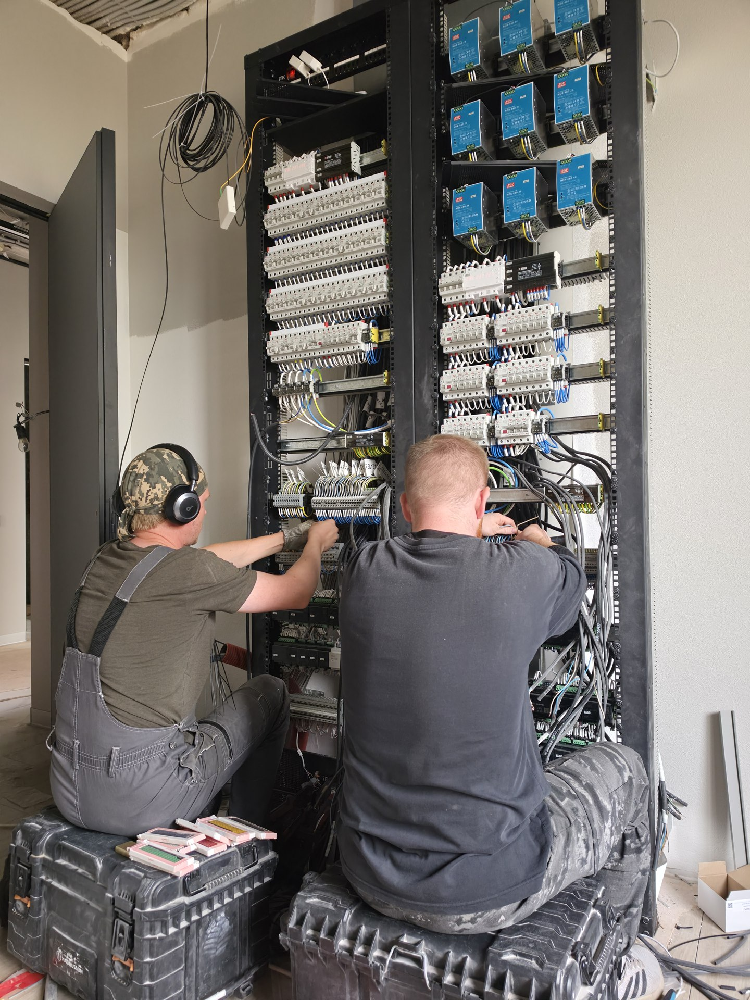

Автоматика · монтаж
Команда за щитом
Работа над соединениями и модулями щита автоматики. На фото — монтажный этап.
Данные мини-кейса
- Тип объекта и площадь
- нужны материалы от Артёма
- Стадия ремонта
- нужны материалы от Артёма
- Задача
- нужны материалы от Артёма
- Что спроектировано
- нужны материалы от Артёма
- Что видно на фото
- Работа над соединениями и модулями щита автоматики. На фото — монтажный этап.
- Полный состав выполненного
- нужны материалы от Артёма
- Сложность
- нужны материалы от Артёма